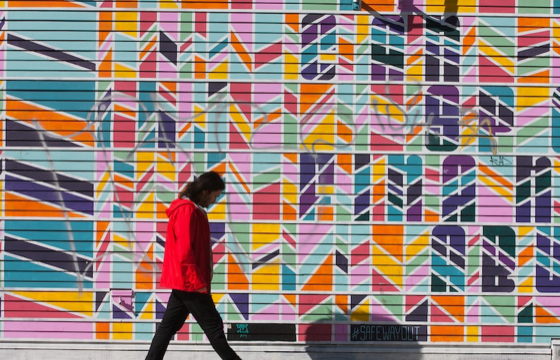
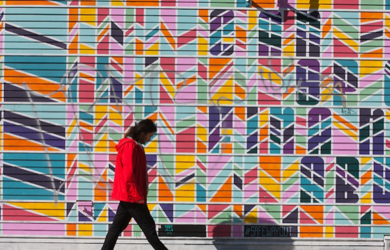
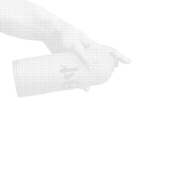
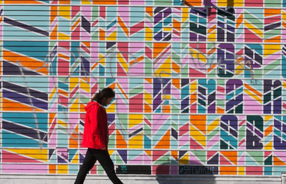

Beautify Earth Weekly Roundup #18


Your weekly dose of street art, opps, events, and media curated by the BE team. Beautify Earth produces, promotes, and advocates for art on the streets. We support local artists and communities by developing environments where artistic freedom, community engagement, and local culture thrive through local art productions, digital products, and educational resources. Header art by ER.

Efren Rebugio Jr. (aka ER / Everyday Research) has over a decade of multifaceted artistry experience. His dynamic and versatile aesthetic combines vivid colors and fanciful elements. His medium of choice is spray paint. Efren implements animals to represent human traits, draws from local flora, and creates precise compositions for a sense of movement. Influenced by diverse cultures, ER's stories encourage viewers to embrace self-empowerment, fostering positivity and self-reflection.
KEO XMEN aka Lord Scotch 79 meet & greet at Overspray
February 14, 2025, 7-9PM
Pomona, CA, US
"KEO XMEN aka Lord Scotch 79, is a prolific graffiti writer from New York. KEO designed logos and illustrated album covers for notable Hip-Hop artists and labels including Kool Keith, Inspectah Deck of the Wu-Tang Clan, EPMD and Nervous records; though perhaps best known for his iconic artwork on Operation: Doomsday by the late MF DOOM"
20th anniversary screening of 'Next: A Primer on Urban Painting' presented by UrbanArtistry
February 19, 2025, 7PM
Manchester, UK
Not only will we be screening the classic documentary, we will also be showing some extra bonus footage and director Pablo Aravena will be in attendance to participate in a post screening Q&A session.
"Next: A Primer on Urban Painting" is an exploration of graffiti as a worldwide cultural phenomenon. Exploring the art form in nine countries including USA, Canada, France, Holland, Germany, England, Spain, Japan and Brazil. Interviewing painters, "writers", designers, and other participants within the subculture, the film celebrates the dynamism and creative brilliance of this extremely influential artistic movement.

Watch -- FifthWallTV recaps Blind Walls Film Fest
FifthWallTV's Doug Gillen interviews founder of Blind Walls Gallery, Dennis Elbers, to recap last week's stellar festival in Breda, Netherlands. Blind Walls has produced over 170 murals in Breda since 2015 based on local stories.
Read -- Graffiti removal isn’t the enemy of art. It’s part of a vibrant dialogue on life in the big city
Dive into "the buff" with Melbourne-based surface researcher, Sabina Andron's, latest article that takes a fresh perspective on symbiotic relationships between artists and buffers and "graffiti removal as aesthetic practice."
E. 10th Street Third Space Project
apply by: Feb 14, 2025
compensation: $5,000
location: Indianapolis, IN, US
about: This project celebrates the Eastside community's history, values, and spirit, with a design inspired by feedback from local residents to ensure it reflects the voices and stories of the neighborhood.
Corpus Christi Mural Fest - call for artists & walls
apply by: Feb 17, 2025
compensation: $4,000 + travel, supplies, etc
location: Corpus Christi, TX, US
about: SAVE THE DATE: MURAL FEST 2025 IS MAY 31ST - JUNE 7TH. The Corpus Christi Downtown Management District (CCDMD) is seeking qualified walls and artists to participate in the 2025 Corpus Christi Mural Festival.
Sheridan Walker Parking Garage Mural
apply by: Feb 19, 2025
compensation: $122,500
location: Oklahoma City, OK, US
about: The Sheridan Walker garage in downtown Oklahoma City at the intersection of Sheridan and Walker Avenues currently has a mural that is deteriorating rapidly. This Call to Artists is for an artist or team to design a new mural, remove the current mural, prep and prime the concrete wall, paint the new mural, then cover the new mural thoroughly with UV protectant. The existing mural is approximately 5,225 square feet and will need to be removed in its entirety. After removal, there are three possible scenarios for the new mural placement outlined in the project document.
InsideOut Literary Arts 30th Anniversary Poetry Mural
apply by: Feb 21, 2025
compensation: $12,750
location: Detroit, MI, US
about: Celebrating Poetry & Youth Voice: Highlight the ability to express, inspire, and transform through the written and spoken word. City Walls Detroit & SpaceLab Detroit are partnering with InsideOut Literary Arts, Detroit’s largest and oldest literary non-profit, to celebrate its 30th anniversary by creating a mural on the Avenue of Fashion.
Register to paint
Venice blvd
community walls
apply by: ongoing
compensation: n/a
location: Los Angeles, CA, US
about: Looking for a great wall for your art? Register your interest to paint on BE's Venice Blvd community walls.
Beautify Earth was built by and for our community with a shared vision of supporting local artists and art initiatives. Our team is committed to not only creating more art in communties but advancing practices of how and why we produce art in public space. Every donation makes a difference and allows us to support more artists and engage more communities. To discuss supporting at a larger scale or partnerships please email hello@beautifyearth.com.
Are you are a forward-thinking city, purpose-driven business, community-centered developer, or curious mind interested in street art or mural production? We're here to share our 14+ years of knowledge and experience to deliver the best art for your project.